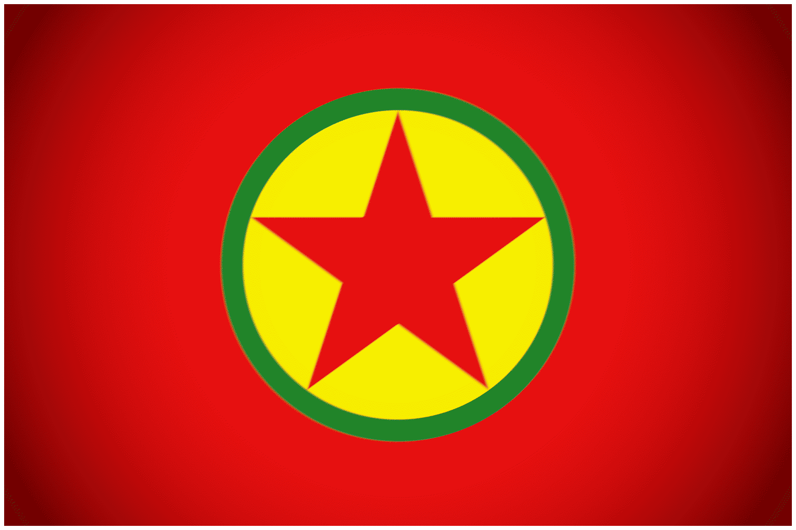
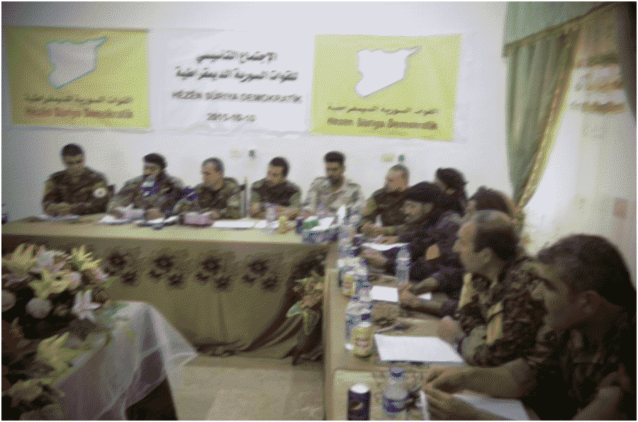

The Syrian Democratic Forces (SDF) is a Kurdish-led coalition of forces located in North-Eastern Syria. The largest and oldest group inside of the SDF is the YPG, a Syrian branch of the PKK

, the largest regional left-wing Kurdish militant organization. The YPG was established during the start of the Syrian Civil War, when the nearly vacated northern Syria regions were poised to come under control of islamist groups. When the YPG was threatened by the rapidly growing Islamic State in 2014, they joined up with moderate Arab groups to form the SDF. During the war against ISIS, the SDF would become the most reliable local partner of the American coalition. Despite this, Turkey and Turkish aligned opposition groups would often fight the SDF, which they saw as a direct extension of the hostile and anti-TurkishPKK . The SDF established the Autonomous Administration of North and East Syria, a de-facto independent system encompassing much of "Rojava". Since the fall of Assad, the SDF have been open to integrating with the Damascus Government, despite ongoing clashes with the Turkish-backed SNA. The SDF are designated as a terrorist group by only one country: Turkey.
Ideology & Tactics
The Syrian Democratic Forces is made up of several organizations that espouse a diverse variety of beliefs. The largest of which, the YPG, is a left wing Kurdish group considered the Syrian branch of the PKK and the militant branch of the PYD political party, a group that espouses a form of democratic federalism. While many groups are majority Kurdish, and others Arab, all are anti-islamist and all engage in combat operations as one against ISIS, al-Nusra, Turkish backed opposition groups, and others. The YPG’s alliance with Arab secular and moderate islamist groups during the height of the Siege of Kobani shows their willingness to forgo some of their principles in a time of need, where fighting evil is a paramount concern. However, in recent years, the Arab factions of the SDF drifted farther away from the Kurdish core, oftentimes revolting against al-Hasakah and aligning with whoever is leading the government in Damascus. One of the SDF's largest allies in the world is the often the dodgy and flaky United States, who despite their designation of the PKK as a terrorist group, continues to arm, train, and send vehicles to the SDF. Inside the YPG itself, one can find the YPJ, a female-led and female controlled branch that actively fights for secularism and free Kurdistan. Governance wise, the AANES is divided into many “cantons” which are divided further into 3000 communes. In the constitution of the AANES, the cantons are given self rule and ability to elect their own assemblies and representatives to the legislative assembly. Like the Republican faction during the Spanish Civil War, the ideals of Rojava attracted hundreds of left wing, anarchist, communist, and feminist foreign fighters from all over the world who utilized their experience to help the SDF wage war against IS and the Turks.
Tactically, like other MENA militant groups, the SDF uses truck technicals, often outfitted with heavy armor as a substitute for real armored vehicles and tanks. They also outfitted lighter armored vehicles with more plates to protect from IS AT. The few MBTs they owned in the earlier years were used far more sparingly and were modified with anti-missile tank cages. As cooperation with the international coalition increased, the SDF's access to American vehicles like the hummvee or the maxxpro also increased. Against the Turks and their groups in Syria, the SDF used nonconventional and guerilla strategies. They would use infiltration to gain intel and distraction, not too dissimilar to the inghisami tactics of groups like HTS. In the Afrin and Jarabulus region, YPG/J sleeper cells would launch attacks against the Turkish occupation, keeping them on edge.
Notable Actions

Fig 1. PRESS CONFERENCE BETWEEN REPRESENTATIVES OF DIFFERENT KURDISH AND ARAB SECULAR LEFT WING GROUPS ANNOUNCING THE CREATION OF THE SDF c. OCTOBER OF 2015